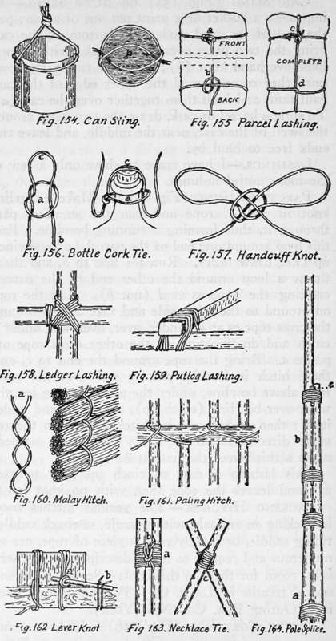

Knots, Hitches, And Lashings. Part 5
Description
This section is from the book "Camping And Woodcraft", by Horace Kephart. Also available from Amazon: Camping and Woodcraft.
Knots, Hitches, And Lashings. Part 5
This hitch is used in another way to attach an article to a line that has both ends fastened, for example, a sinker to a fishing line. Gather a loop in the line and bend it back on itself, Fig. i$ib, slip the sinker through the double loop thus formed, and tighten by hauling on the two ends.
Pack Sling (Fig. 152)
Make a loop a in the middle of a rope, with ends crossed as shown, b, c, and lay the rope on a log or stump. Place the folded pack on the rope. Back up to it and pull the loop a over your head and down under your chin. Pass the ends b, c, up through the loop, cinch them tight, and tie each with a slip knot.
Harness Hitch (Fig. 153) Or Artillery Knot
Although not a sling, this hitch is introduced here for convenience sake. Enables one to make a loop quickly in a rope or line, the ends of which are already engaged. Derives its names from being the best way to harness men to a rope for towing boats, dragging guns, etc., where horses cannot be employed. The loop is thrown over a man's shoulder so he can exert his full strength. Make a large loop, laying the right end backward over the left. Pick up right side of loop and draw it toward you over the standing part in the position shown in upper diagram. Place the hand under b and grasp the rope at a. Draw a right through, as in lower diagram, and tighten.
Unless care is taken in drawing this knot close it is apt to turn itself in such manner as to slip, even though correctly made. It is best to put the right foot on the right hand part of the rope, or 9 foot on each side, to prevent slipping; then tighten.
Can Sling (Fig. 154) Or Butt Sling
To improvise a bucket or a paint pot out of a can: pass the end of the cord under the bottom of the can, bring the two parts over it and make with them a loose overhand knot (b) ; draw the two parts down until they come around the upper edge of the can; haul taut, and knot them together over the can (a). To sling a barrel or cask, draw the two parts around the swell of the cask, near the middle, and leave two ends free to haul by.
Lashings
I have space to show only a few of the more useful lashings.
Parcel Lashing (Fig. 155)
Make a bowline knot in end of rope and run the standing part through it, thus forming a running bowline. Pass this loop around one end of the parcel (a) and cinch up (i.e., draw taut). Run the line to b} and there throw a loop around the other end of the parcel, crossing the rope as at d (not b). Run the rope on around to the other side and take a turn around the cross rope as at b (under, over, over, and under), cinch and do the same at the other cross rope opposite a. Bring the rope around the end to c, and there hitch it fast by passing end over the cross rope above bowline, under the part running lengthwise, over bowline (cinch up), back over and under itself; then make a similar hitch with it in the reverse direction, and, if extra security is needed, make a third over the first at b.
This lashing is easy to cinch up, easy to cast off, and leaves the rope then with no knot in it.
Packing Hitches
The various hitches used in packing on animals, with aparejo, sawbuck saddle, riding saddle, or merely with a piece of rope, are so numerous and require so much description that there is no room for them in this book. See the excellent special treatise by Lieut. C. J. Post on Horse Packing (Outing Pub. Co., New York).
Bottle Cork Tie (Fig. 156)
Make a common slip knot like Fig. 135 (start an overhand knot, a, Fig. 156, but instead of drawing the end b through, leave it inside a, forming the upper loop c). Put the lower loop a down over the neck of the bottle with c over top of cork, draw taut, run the free ends up over the cork and tie them alongside of c.
Handcuff Knot (Fig. 157)
Make a slip knot like the first part of Fig. 156, but return the end b back through the open knot so as to form a double loop or bow. Slip these loops over a man's wrists, draw taut, tie the loose ends firmly around the central part with a reef knot and you have him secured in a way that would baffle a "handcuff king." A prisoner can be secured even with a piece of fish-line by tying his thumbs together behind his back with this knot.
Never fasten a prisoner's single wrist to your own: that would place him on equal terms. If he protests that the cords hurt him, or feigns sickness, "watch well lest you cure him too quickly "
Ledger Lashing (Fig. 158)
A scaffold ledger or other horizontal stick is lashed to a vertical timber in the way here shown.
Putlog Lashing (Fig. 159)
A putlog or other squared timber may be roped to a horizontal pole in the manner illustrated.
Malay Hitch (Fig. 160)
This is a quick way to fasten together wisps of grass, reeds, etc., for matting, or poles, planks, or other material for siding of temporary quarters. The whole affair can be shaken apart in a few moments leaving no knots in the ropes.
Paling Hitch (Fig. 161)
Used by Indians of the olden time to set up the framework of their houses, rawhide ropes being employed, which were put on wet and shrank very tight in drying. With ropes or vines, it can be used to secure small poles as palings to horizontal ones between posts, in making a tight fence around camp.
Lever Knot (Fig. 162)
To secure large piece§ of timber togethei, or to lash articles fast to logs, such as a box to a raft: take two or three turns of rope somewhat loosely round the article and its support, then insert a stiff stick under the coils (a) and twist round until all the slack is taken out and the cordage is taut; the end of the lever is then jecured with cord (b).
A similar appliance may be used as a vice, or to get a powerful grip on a smooth round object, such as a large pipe. The degree of tension is limited only by the strength of the rope and the length of the lever.
Continue to:
- prev: Knots, Hitches, And Lashings. Part 4
- Table of Contents
- next: Knots, Hitches, And Lashings. Part 6